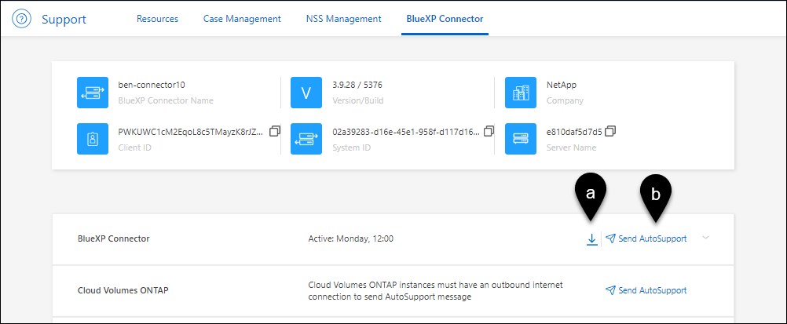
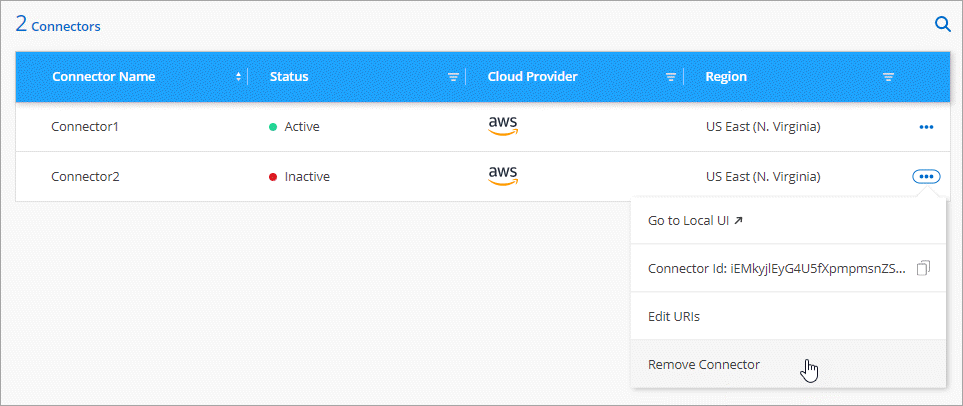

Note di rilascio
Note di rilascio
Gestire i connettori esistenti
 Suggerisci modifiche
Suggerisci modifiche
Dopo aver creato un connettore, potrebbe essere necessario gestirlo ogni tanto. Ad esempio, se si dispone di più connettori, è possibile passare da un connettore all'altro. In alternativa, potrebbe essere necessario aggiornare manualmente il connettore quando si utilizza BlueXP in modalità privata.

|
Il connettore include un'interfaccia utente locale, accessibile dall'host del connettore. Questa interfaccia utente è fornita per i clienti che utilizzano BlueXP in modalità limitata o privata. Quando si utilizza BlueXP in modalità standard, è necessario accedere all'interfaccia utente da "Console SaaS BlueXP" |
Manutenzione del sistema operativo e delle macchine virtuali
La manutenzione del sistema operativo sull'host del connettore è responsabilità dell'utente. Ad esempio, è necessario applicare gli aggiornamenti per la protezione al sistema operativo sull'host del connettore seguendo le procedure standard dell'azienda per la distribuzione del sistema operativo.
Tenere presente che non è necessario interrompere alcun servizio sull'host del connettore quando si esegue un aggiornamento del sistema operativo.
Se è necessario arrestare e avviare la macchina virtuale del connettore, è necessario farlo dalla console del provider di cloud o utilizzando le procedure standard per la gestione on-premise.
Tipo di macchina virtuale o istanza
Se hai creato un connettore direttamente da BlueXP, BlueXP ha implementato un'istanza di macchina virtuale nel cloud provider utilizzando una configurazione predefinita. Dopo aver creato il connettore, non si dovrebbe passare a un'istanza VM più piccola con meno CPU o RAM.
I requisiti della CPU e della RAM sono i seguenti:
- CPU
-
4 core o 4 vCPU
- RAM
-
14 GB
Visualizzare la versione di un connettore
È possibile visualizzare la versione del connettore per verificare che il connettore sia stato aggiornato automaticamente alla versione più recente o perché è necessario condividerlo con il rappresentante NetApp.
-
Nella parte superiore destra della console BlueXP, selezionare l'icona della Guida.
-
Selezionare supporto > connettore BlueXP.
La versione viene visualizzata nella parte superiore della pagina.

Passare da un connettore all'altro
Se si dispone di più connettori, è possibile passare da un connettore all'altro per visualizzare gli ambienti di lavoro associati a uno specifico connettore.
Ad esempio, supponiamo di lavorare in un ambiente multi-cloud. In AWS potrebbe essere presente un connettore e in Google Cloud un altro connettore. Per gestire i sistemi Cloud Volumes ONTAP in esecuzione in tali cloud, è necessario passare da un connettore all'altro.
-
Selezionare l'elenco a discesa Connector, selezionare un altro connettore, quindi Switch.

BlueXP aggiorna e mostra gli ambienti di lavoro associati al connettore selezionato.
Scaricare o inviare un messaggio AutoSupport
In caso di problemi, il personale NetApp potrebbe richiedere di inviare un messaggio AutoSupport al supporto NetApp per la risoluzione dei problemi.
-
Nella parte superiore destra della console BlueXP, selezionare l'icona della Guida e selezionare supporto.

-
Selezionare BlueXP Connector.
-
A seconda della modalità di invio delle informazioni al supporto NetApp, scegliere una delle seguenti opzioni:
-
Selezionare l'opzione per scaricare il messaggio AutoSupport sul computer locale. Puoi quindi inviarla al supporto NetApp utilizzando un metodo preferito.
-
Selezionare Send AutoSupport (Invia messaggio) per inviare direttamente il messaggio al supporto NetApp.

-
Connettersi alla macchina virtuale Linux
Per connettersi alla macchina virtuale Linux su cui viene eseguito il connettore, è possibile utilizzare le opzioni di connettività disponibili presso il provider di servizi cloud.
- AWS
-
Quando è stata creata l'istanza del connettore in AWS, sono stati forniti una chiave di accesso AWS e una chiave segreta. È possibile utilizzare questa coppia di chiavi per SSH all'istanza. Il nome utente per l'istanza EC2 Linux è ubuntu (per i connettori creati prima di maggio 2023, il nome utente era EC2-user).
- Azure
-
Quando è stata creata la Connector VM in Azure, è stato specificato un nome utente e si è scelto di autenticarsi con una password o una chiave pubblica SSH. Utilizzare il metodo di autenticazione scelto per la connessione alla macchina virtuale.
- Google Cloud
-
Non è possibile specificare un metodo di autenticazione quando si crea un connettore in Google Cloud. Tuttavia, è possibile connettersi all'istanza di Linux VM utilizzando Google Cloud Console o Google Cloud CLI (gcloud).
Richiedi l'utilizzo di IMDSv2 sulle istanze di Amazon EC2
A partire da marzo 2024, BlueXP ora supporta Amazon EC2 Instance Metadata Service versione 2 (IMDSv2) con connettore e Cloud Volumes ONTAP (incluso il mediatore per le implementazioni ha). IMDSv2 fornisce una maggiore protezione contro le vulnerabilità. "Scopri di più su IMDSv2 dal blog sulla sicurezza AWS"
-
IMDSv2 è attivato per impostazione predefinita su tutte le nuove istanze del connettore EC2. IMDSv1 è stato abilitato prima di marzo 2024.
-
IMDSv1 è abilitato per impostazione predefinita su tutte le istanze nuove ed esistenti di Cloud Volumes ONTAP EC2.
Se richiesto dai criteri di protezione, è possibile configurare le istanze EC2 in modo che utilizzino IMDSv2.
-
La versione del connettore deve essere 3.9.38 o successiva.
-
Questa modifica richiede il riavvio delle istanze di Cloud Volumes ONTAP.
Questi passaggi richiedono l'utilizzo dell'interfaccia a riga di comando di AWS, perché devi modificare il limite del nodo di risposta su 3.
-
Richiedere l'uso di IMDSv2 sull'istanza del connettore:
-
Connettersi alla macchina virtuale Linux per il connettore.
Quando è stata creata l'istanza del connettore in AWS, sono stati forniti una chiave di accesso AWS e una chiave segreta. È possibile utilizzare questa coppia di chiavi per SSH all'istanza. Il nome utente per l'istanza EC2 Linux è ubuntu (per i connettori creati prima di maggio 2023, il nome utente era EC2-user).
-
Installa l'interfaccia a riga di comando di AWS.
-
Utilizzare
aws ec2 modify-instance-metadata-optionsComando per richiedere l'uso di IMDSv2 e per modificare il limite di risposta PUT hop a 3.Esempio
aws ec2 modify-instance-metadata-options \ --instance-id <instance-id> \ --http-put-response-hop-limit 3 \ --http-tokens required \ --http-endpoint enabled
Il http-tokensSet di parametri IMDSv2 su richiesto. Quandohttp-tokensè obbligatorio, è necessario impostare anchehttp-endpointsu attivato. -
-
Richiedi l'utilizzo di IMDSv2 sulle istanze di Cloud Volumes ONTAP:
-
Accedere alla "Console Amazon EC2"
-
Dal riquadro di navigazione, selezionare istanze.
-
Selezionare un'istanza di Cloud Volumes ONTAP.
-
Selezionare azioni > Impostazioni istanza > Modifica opzioni metadati istanza.
-
Nella finestra di dialogo Modifica opzioni metadati istanza, selezionare quanto segue:
-
Per Servizio metadati istanza, selezionare Abilita.
-
Per IMDSv2, selezionare richiesto.
-
Selezionare Salva.
-
-
Ripetere questi passaggi per altre istanze di Cloud Volumes ONTAP, incluso il mediatore ha.
-
L'istanza del connettore e le istanze di Cloud Volumes ONTAP sono ora configurate per l'utilizzo di IMDSv2.
Aggiornare il connettore quando si utilizza la modalità privata
Se si utilizza BlueXP in modalità privata, è possibile aggiornare il connettore quando è disponibile una versione più recente dal NetApp Support Site.
Il connettore deve essere riavviato durante il processo di aggiornamento, in modo che la console basata su Web non sia disponibile durante l'aggiornamento.
|
|
Quando si utilizza BlueXP in modalità standard o limitata, il connettore aggiorna automaticamente il proprio software all'ultima versione, a condizione che disponga di accesso a Internet outbound per ottenere l'aggiornamento software. |
-
Scaricare il software del connettore da "Sito di supporto NetApp".
Assicurarsi di scaricare il programma di installazione offline per le reti private senza accesso a Internet.
-
Copiare il programma di installazione sull'host Linux.
-
Assegnare le autorizzazioni per eseguire lo script.
chmod +x /path/BlueXP-Connector-offline-<version>Dove <version> è la versione del connettore scaricato.
-
Eseguire lo script di installazione:
sudo /path/BlueXP-Connector-offline-<version>Dove <version> è la versione del connettore scaricato.
-
Una volta completato l'aggiornamento, è possibile verificare la versione del connettore accedendo a Guida > supporto tecnico > connettore.
Modificare l'indirizzo IP di un connettore
Se necessario per la tua azienda, puoi modificare l'indirizzo IP interno e l'indirizzo IP pubblico dell'istanza del connettore assegnata automaticamente dal tuo cloud provider.
-
Seguire le istruzioni del provider cloud per modificare l'indirizzo IP locale o l'indirizzo IP pubblico (o entrambi) per l'istanza del connettore.
-
Se è stato modificato l'indirizzo IP pubblico ed è necessario connettersi all'interfaccia utente locale in esecuzione sul connettore, riavviare l'istanza del connettore per registrare il nuovo indirizzo IP con BlueXP.
-
Se è stato modificato l'indirizzo IP privato, aggiornare la posizione di backup per i file di configurazione Cloud Volumes ONTAP in modo che i backup vengano inviati al nuovo indirizzo IP privato sul connettore.
Sarà necessario aggiornare la posizione di backup per ciascun sistema Cloud Volumes ONTAP.
-
Eseguire il seguente comando dall'interfaccia CLI di Cloud Volumes ONTAP per visualizzare la destinazione di backup corrente:
system configuration backup show -
Eseguire il seguente comando per aggiornare l'indirizzo IP della destinazione di backup:
system configuration backup settings modify -destination <target-location>
-
Modificare gli URI di un connettore
Aggiungere e rimuovere l'URI (Uniform Resource Identifier) per un connettore.
-
Selezionare l'elenco a discesa Connector dall'intestazione BlueXP.
-
Selezionare Gestisci connettori.
-
Selezionare il menu delle azioni per un connettore e selezionare Edit URI (Modifica URI).
-
Aggiungere e rimuovere URI, quindi selezionare Apply (Applica).
Correggere gli errori di download quando si utilizza un gateway NAT Google Cloud
Il connettore scarica automaticamente gli aggiornamenti software per Cloud Volumes ONTAP. Il download potrebbe non riuscire se la configurazione utilizza un gateway Google Cloud NAT. È possibile correggere questo problema limitando il numero di parti in cui è divisa l'immagine software. Questa fase deve essere completata utilizzando l'API BlueXP.
-
Inviare una richiesta PUT a /occm/config con il seguente JSON come corpo:
{ "maxDownloadSessions": 32 }Il valore per maxDownloadSessions può essere 1 o qualsiasi numero intero maggiore di 1. Se il valore è 1, l'immagine scaricata non verrà divisa.
Si noti che 32 è un valore di esempio. Il valore da utilizzare dipende dalla configurazione NAT e dal numero di sessioni che è possibile avere contemporaneamente.
Rimuovere i connettori da BlueXP
Se un connettore non è attivo, è possibile rimuoverlo dall'elenco dei connettori in BlueXP. Questa operazione può essere eseguita se la macchina virtuale Connector è stata eliminata o se il software Connector è stato disinstallato.
Tenere presente quanto segue per la rimozione di un connettore:
-
Questa azione non elimina la macchina virtuale.
-
Questa azione non può essere annullata - una volta rimosso un connettore da BlueXP, non è possibile aggiungerlo nuovamente.
-
Selezionare l'elenco a discesa Connector dall'intestazione BlueXP.
-
Selezionare Gestisci connettori.
-
Selezionare il menu delle azioni per un connettore inattivo e selezionare Remove Connector (Rimuovi connettore).

-
Inserire il nome del connettore da confermare, quindi selezionare Remove (Rimuovi).
BlueXP rimuove il connettore dai record.
Disinstallare il software Connector
Disinstallare il software Connector per risolvere i problemi o per rimuovere definitivamente il software dall'host. La procedura da seguire dipende dal fatto che il connettore sia stato installato su un host con accesso a Internet (modalità standard o limitata) o su un host in una rete che non dispone di accesso a Internet (modalità privata).
Disinstallare quando si utilizza la modalità standard o limitata
I passaggi riportati di seguito consentono di disinstallare il software del connettore quando si utilizza BlueXP in modalità standard o limitata.
-
Connettersi alla macchina virtuale Linux per il connettore.
-
Eseguire lo script di disinstallazione dall'host Linux:
/opt/application/netapp/service-manager-2/uninstall.sh [silent]silent esegue lo script senza richiedere conferma.
Disinstallare quando si utilizza la modalità privata
La procedura riportata di seguito consente di disinstallare il software del connettore quando si utilizza BlueXP in modalità privata in cui non è disponibile alcun accesso a Internet.
-
Connettersi alla macchina virtuale Linux per il connettore.
-
Dall'host Linux, eseguire i seguenti comandi:
./opt/application/netapp/ds/cleanup.sh
rm -rf /opt/application/netapp/ds